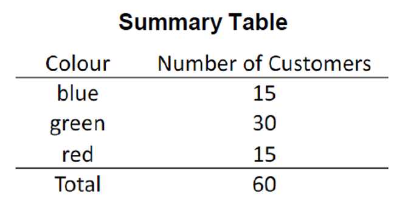
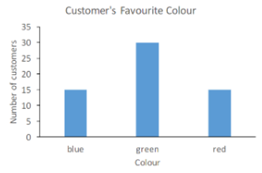
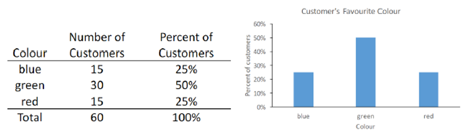
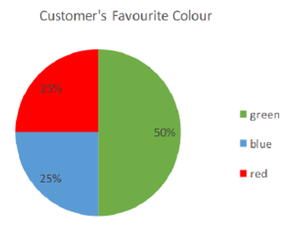
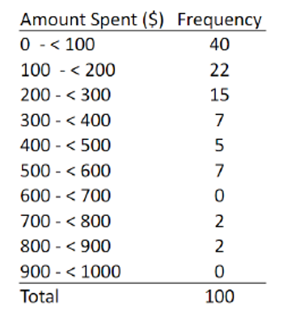
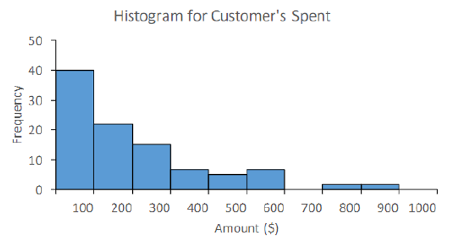
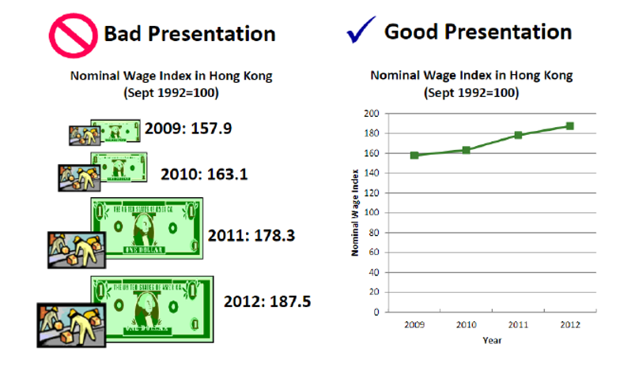
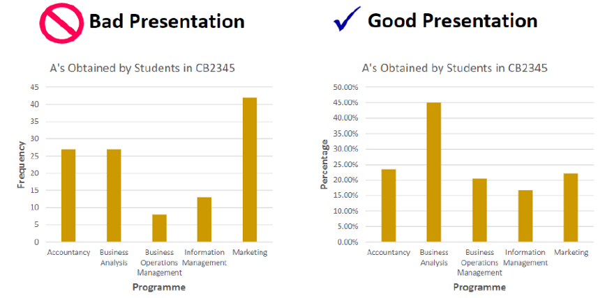
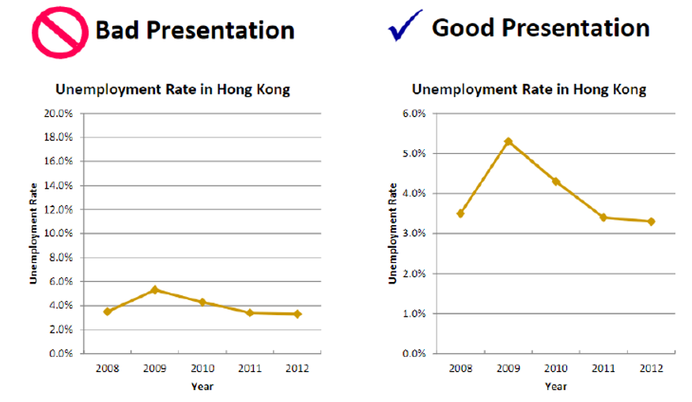
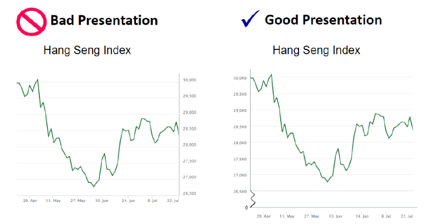

In this story, we will go through the most basic, and arguably the most commonly used, data visualizations in statistics. Data visualization plays a huge role in performing statistical and data analysis. It allows us to quickly extract insights and understand the overall picture of a dataset.
The most appropriate visualization depends on the variable type and the dataset. Certain visualizations can only be applied to categorical variables, while others are more suited to numeric variables. Let’s discuss the visualizations for categorical variables first.
Visualizations for Categorical Variables
The three visualizations for categorical variables we'll be discussing are:
- Summary Table
- Bar Chart
- Pie Chart
Summary Table

A Summary Table is a visualization that summarizes statistical information in a table. We can see that the summary table above records the color and the number of customers that correspond to each color. While we don’t have a lot of understanding of the data, we can assume this dataset is about customers’ favorite colors. It appears that customers tend to prefer green (30 customers). Blue and red have an equal preference at a count of 15.
Terminology Alert!
The count is also called frequency in statistical terms.
Summary Table
A summary table wouldn’t always be the preferred visualization. In cases where frequencies are huge numbers and close to each other, it may become quite hard to identify anomalies from the table. In that case, a Bar Chart will do a much better job.

The bar chart allows us to easily identify green as the most popular color without looking at any numbers. We have the colors on the x-axis and the frequency on the y-axis. Bar charts can also be represented in percentage (also called Relative Frequency in statistical terms). You can see below that the bar chart in relative frequency looks exactly the same as it is in frequency. The only difference is in the label used on the y-axis.

The only concern when you construct a bar chart is you have to ensure that the gaps between two bars and the width of the bars are consistent. Any inconsistencies could lead to misperceptions.
Pie Chart

Next, we have pie charts. Pie Charts present the categories relative to each other, allowing a clearer comparison of categories as a whole. Slices (each category) are mutually exclusive (don’t overlap) and collectively exhaustive (sum up to 100%). We'll discuss these two terms in more detail under probability. Labels of the percentage or count of each category should be displayed in case it becomes difficult to compare slices of similar size.
So far, we’ve discussed visualizations for categorical data. Let’s move forward to talk about visualizations for numerical data.
Visualizations for Numerical Variables
In this story, we will discuss two visualizations for numerical data:
- Frequency Distribution
- Histogram
Frequency Distribution
Numerical data can span a huge range. Therefore, to visualize numerical data, we need to group the numbers into intervals (or classes). A table that displays the frequency in each interval is the Frequency Distribution. Here's an example:

We can see from this frequency distribution that, out of 100 observations, 40 of them have Amount Spent ($) fall under the interval 0–100. Only 22 observations have Amount Spent ($) fall under the interval 100–200, and so on. From this table, we can identify the interval where most data points fall, and thus understand how Amount Spent ($) is distributed.
To build a frequency distribution, we can follow these simple steps:
- Sort data in ascending order (by the value of the numerical variable)
- Calculate the range (largest value minus smallest value)
- Select the number of classes of your choice (eg. 10 classes)
- Compute the class interval width (range ÷ number of classes) which you may round to a more convenient number
- Determine class boundaries (an interval 0–100 has a lower boundary of 0 and an upper boundary of 100)
- Allocate observations to each class and count the number of observations in each class (frequency)
There is no single answer to building a frequency distribution since the results would look different if you had a different intended number of classes. As long as you have a reasonable number of classes, and allocate the observations into the classes correctly, your frequency distribution can’t be wrong. Just like the bar chart, be sure that the width of each interval is identical. Only in very special circumstances can intervals be unequal. In addition, class boundaries typically include the lower boundaries, but not the upper boundaries. You can go the other way around, but just stay consistent.
Histogram
Once you understand how to read and construct a frequency distribution, a Histogram should also be easy to understand. The histogram is just a graphical representation of the frequency distribution.

You can see we have the intervals on the x-axis and the frequency on the y-axis. Again, the width of bars and intervals are consistent. Some may ponder upon the difference between a histogram and a bar chart. If you still haven’t realized it, you can see that there are no gaps in between intervals. The bars are interconnected because Amount Spent ($) is a numerical variable and it could be any value within a specified range.
The difference between a bar chart and a histogram is that bar charts display categorical data whereas histograms display numerical data. That is why the bars in a bar chart are separated because each value is a separate entity in itself.Finally, frequency distributions and histograms could also be represented in relative frequency.
Faulty Graphs
Good job! We just learned the most basic visualizations in statistics. There are still plenty of visualizations out there, but let’s stop here for now. Instead, let’s focus on some traits of faulty graphs. To construct good visualization, we have to know what constitutes a bad one. I’ll go over the most common mistakes people make when building a graph.
No Chart Junks!
Keep your graph simple. People often try to add complicated yet uninformative decorations to embellish their graphs. In the visualizations below, we can see that the one to the left includes money icons, whose size is likely dependent on the national wage index. We call these unnecessary visualizations Chart Junk. Chart junks don’t facilitate any comparison and make the visualization as a whole difficult to interpret.

No Relative Bias!
In the left graph below, it appears that students in the marketing program scored the most A grades. This may be misleading because it doesn’t take into account the number of students in each program. It would be unfair to compare the number of students who scored an A between programs if there are 1000 marketing students and only 100 accounting students. The graph to the right uses percentage instead of frequency on the y-axis, and we can see that students from the BA program actually have the greatest proportion of As.

Compress the Vertical Axis!
INot only does the graph to the left not utilize the empty space on the top, but it also makes the unemployment trend flatter, making it harder to visualize. The graph to the right provides a much better reflection of the fluctuation in the unemployment rate throughout the years.

Include Point Zero!
When values get too big (usually on the y-axis), people often forget the importance of starting their axes from 0. It may give the impression that values are much smaller than they actually are. Consider the graph to the left below. The Hang Seng Index appears to fall to a very low point at around 10 Jun, but if you look more carefully, the index is still around 26,500. It appears the best way to fix this issue is to extend the y-axis such that it starts from 0, but this would also be impractical because that would create a lot of empty space. So the best way to approach this problem is to insert a break symbol. The Break Symbol is utilized in the graph to the right at the bottom of the y-axis. It serves to remind readers that a huge section of white space is removed. With the break symbol, the y-axis can now start from 0.

Other Bad Traits:
- Inconsistent intervals
- Missing title and axis labels
Conclusion
Yay! We're done with this story on basic data visualizations! To recap, we went through visualizations that are appropriate to both categorical data and numerical data. We listed the steps to construct a frequency distribution and compared the differences between a histogram and a bar chart. In the end, we also talked about faulty graphs and traits that tend to mislead interpretations. In our next story, we'll jump into numbers and formulas and discuss the three main aspects of a distribution.
Next: The Three Aspects of a Distribution